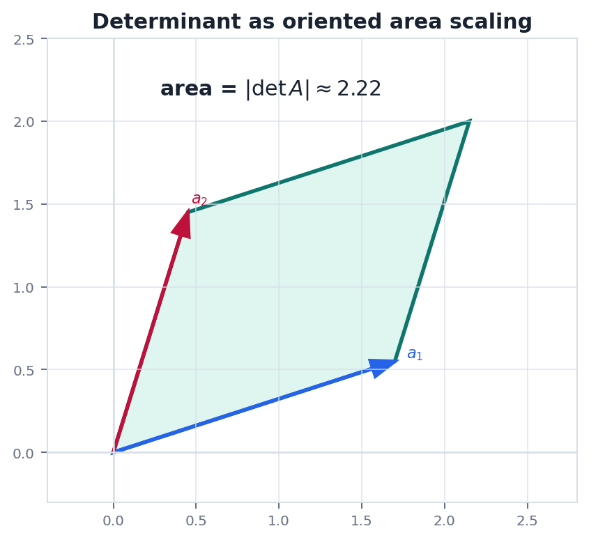
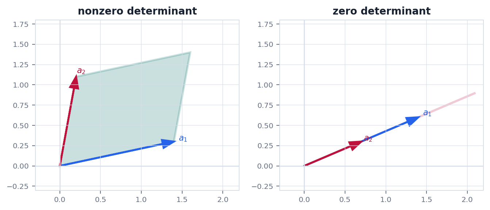

Route
0. 全章主线
行列式不是为了机械展开, 而是为了度量线性变换对空间体积的影响.
二维面积两列向量围成平行四边形.
有向缩放符号记录方向是否翻转.
性质行变换如何改变面积.
可逆性体积不为零才没压扁.
应用从坐标变换到物理量守恒.
Definition
1. 从二阶行列式开始
二阶行列式就是两个列向量围成的有向面积.
$$
\det\begin{bmatrix}a&b\\c&d\end{bmatrix}=ad-bc
$$
如果把矩阵列向量看成 $u=(a,c)^T$ 和 $v=(b,d)^T$, 那么 $|\det A|$ 就是它们张成的平行四边形面积. 符号则表示方向是否被翻转.
直觉两列越接近共线, 平行四边形越瘦, 行列式绝对值越小. 完全共线时面积为零, 变换不可逆.
Properties
2. 行列式的核心性质
行列式性质都可以从有向体积的变化来理解.
| 操作 | 行列式变化 | 几何解释 |
|---|---|---|
| 交换两行 | 变号 | 空间方向翻转 |
| 某行乘 $k$ | 乘以 $k$ | 一个方向伸缩 $k$ 倍 |
| 一行加另一行倍数 | 不变 | 剪切不改变面积或体积 |
| 两行相同或相关 | 为 0 | 体积被压扁 |
$$
\det(AB)=\det(A)\det(B)
$$
复合变换的体积缩放因子等于每一步缩放因子的乘积.
Invertibility
3. 行列式和可逆性
方阵可逆的一个关键判据是行列式不为零.
$$
A\ \text{可逆}\quad\Longleftrightarrow\quad \det A\ne0
$$
如果 $\det A=0$, 说明某些非零方向被压到低维空间里. 信息已经丢失, 就不可能存在真正的逆变换把所有输出唯一还原.
边界行列式只对方阵定义. 对非方阵问题, 可逆性要改成单射, 满射, 秩, 伪逆等语言.
Geometry
4. 几何图像: 面积和塌缩
把列向量画出来, 行列式的大小和零值会很直观.


Physics
5. 物理问题: 坐标变换中的体积因子
物理积分换元时, 行列式给出面积或体积元素的缩放.
问题计算一个非规则区域中的质量, 常把坐标从 $(u,v)$ 变换到 $(x,y)$. 面密度积分必须乘上面积元素缩放因子.
$$
\iint_R \rho(x,y)\,dx\,dy
=
\iint_S \rho(x(u,v),y(u,v))
\left|\det\frac{\partial(x,y)}{\partial(u,v)}\right|\,du\,dv
$$
在线性变换中, Jacobian 就是矩阵本身. 因此行列式直接告诉我们每个微小面积块被放大或缩小了多少.
Checklist
6. 实战清单与易错点
行列式计算要服务结构判断, 不要陷入无意义展开.
实战清单
- 矩阵是否方阵?
- 能否用行变换化成三角形?
- 每次行操作对行列式影响是否记录?
- 结果是否能解释面积, 体积或可逆性?
高频错误
- 交换行忘记变号.
- 把矩阵乘法和行列式乘法混淆.
- 把 $\det A$ 当成矩阵本身的大小.
- 余子式符号因子 $(-1)^{i+j}$ 漏掉.
记住行列式是有向体积缩放因子. 为零表示空间被压扁, 非零表示方阵没有丢掉维度.